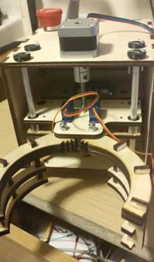

Physical build · Competition robotics
Eurobot autonomous mobile robot
An autonomous mobile robot we built for the Eurobot competition.

What we were building
Our task was to build a robot that could move around the competition field and handle game objects. It needed to work reliably, not just in our workshop but during the actual event.Our original Eurobot design used a servo-driven gripper to pick up and move objects, but the servos struggled to maintain enough torque, so the robot kept losing its grip. The mechanism also required more complicated control and consumed power without consistently completing the task.I proposed replacing the gripper with a mechanical sweeping system. Instead of stopping, gripping an object, lifting it and moving it, the robot could sweep the object towards its destination as it travelled. I helped build and integrate the new mechanism, which removed the grip problem and made the task quicker by reducing the number of actions the robot needed to perform.
My contribution
- I proposed the sweeping mechanism when testing showed the original gripper was unreliable.
- I helped fabricate and assemble the redesigned mechanism, which packed and swept the game pieces instead of trying to grip them.
- I worked with the team on the robot’s laser-cut and 3D-printed parts, motors, servos, Arduino, LiDAR and lead-screw lift.
- I helped test the robot and troubleshoot the mechanism before the competition.

What I learned
Physical testing often exposes failure modes not obvious in CAD. The mechanism redesign made clear why reliability, clearances and manufacturing tolerances matter as much as a plausible concept.
Cake and cherry task demonstration
One of our main tasks was to move the cake disks onto a plate and place a cherry on top. This is a short demonstration of that task, not a complete competition run.
I don’t have a recorded success-rate comparison between the original gripper and the sweeper, so I’ve kept the discussion to what we changed and why.